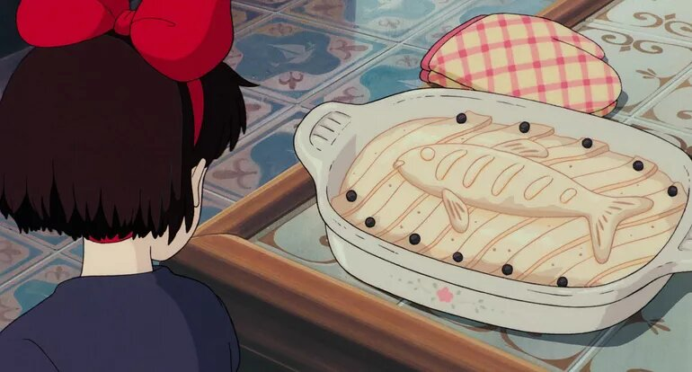

Kiki's Delivery Pie

It's not easy being a rookie witch starting a home delivery business!
Luckily, you sometimes work for caring and attentive customers! One of
them needs you to help her bake her herring pie before delivering it: her
oven just broke down and she wanted to deliver this pie to her granddaughter
for her birthday... The pie looks delicious, why don't you ask for the recipe?
Ingredients
Main dish
- 400g of herring fillets or cod back, boned by your fishmonger
- 500g pumpkin or kabucha
- 2 pieces of shortcrust pastry of 200g each
- Butter for the mould
- Flour to knead the dough
- Olive oil
- Salt, pepper
Herbs Bechamel
- A few sprigs of tarragon or flat parsley
- 15g vegetable oil or soft butter
- 15g of flour
- 1 good pinch of salt
- 25cl of milk or dashi
- 1 pinch of grated nutmeg
Cooking and Presentation
- 1 egg yolk + 1 tablespoon of milk
- Olive oil
- Pepper, sansho pepper
Steps
- Prepare the fish: salt it finely on all sides
and set aside in the refrigerator. The salt will
firm up the flesh, season it and ensure that it
cooks well.
- Move on to cooking the pumpkin: peel and skin it
before cutting it into cubes.
Place them in a bamboo steamer basket or in the
basket of a pressure cooker. Bring a pot of water
to a boil and cover it with the pumpkin steamer
basket or place your pressure cooker on medium
heat. Steam for 25 minutes (15 minutes when your
pressure cooker starts whispering again).
- While the pumpkin is cooking, prepare the
béchamel sauce: finely
chop the herbs. Set aside. Pour the oil or butter
into a saucepan and heat over medium heat. Once
the oil is hot, or the butter has melted, add
the flour and salt all at once. Mix well with a
wooden spatula until the mixture comes away from
the pan (this is called a desiccation). It is
important to cook the flour well. Lower the heat
and gradually whisk in the milk. Whisk until you
have a smooth mixture. Add the nutmeg and herbs
and adjust the seasoning. Set aside off the heat.
- Once cooked and very soft, place the pumpkin in a
bowl and season with a good pinch of salt, pepper
and a drizzle of olive oil. Using a potato masher
or a fork, mash the pumpkin until it is smooth.
Set aside at room temperature.
- Your elements are in place, move on to the preparation
of the dough. Preheat the oven to 180°C (TH.6). Butter
a baking pan. Roll out the first piece of dough on a
floured work surface, so that it lines the pan perfectly.
Remove the excess dough and set it aside.
- Garnish the bottom of the pie with the pumpkin crush.
Cover it with the fish. Sprinkle with pepper or sansho
pepper. Cover with béchamel sauce.
- Lay the second piece of shortcrust pastry on a floured
work surface and cover the dish. Remove the excess
dough and join it to the previously reserved dough.
Join the two pieces of dough by pinching them together.
- Roll out the remaining dough and cut out various
shapes such as fish heads, scales and strips with
a cookie cutter or knife. Place these elements on
the pie. Make a hole in the eye of the fish or behind
the tail so that the steam in the pie can escape during
cooking. Finally, mix the milk with the egg yolk and
generously brown the pie. Bake for 35 to 40 minutes
depending on your oven.
- Presentation: serve this pie as is or with a nice fresh
salad, accompanied by a soy miso vinaigrette!
Prev.
Next
Home